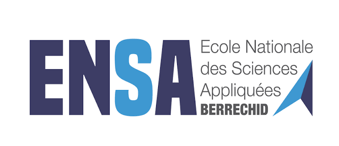
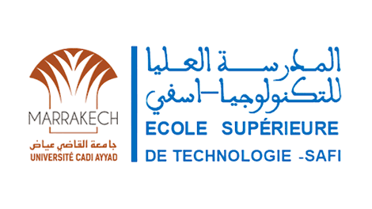
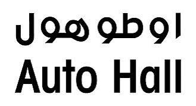
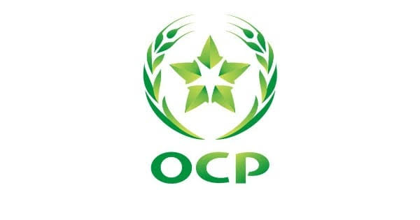
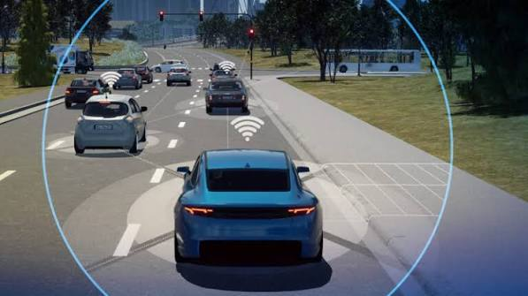
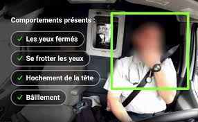
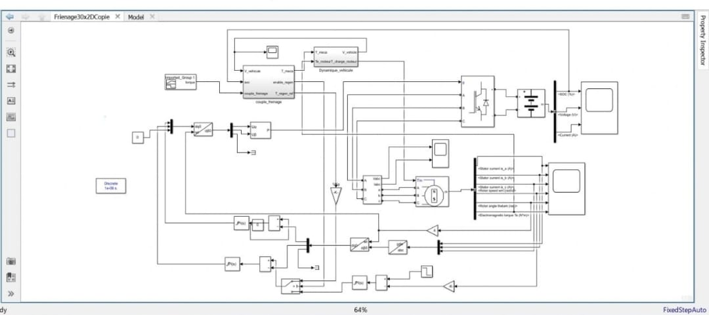
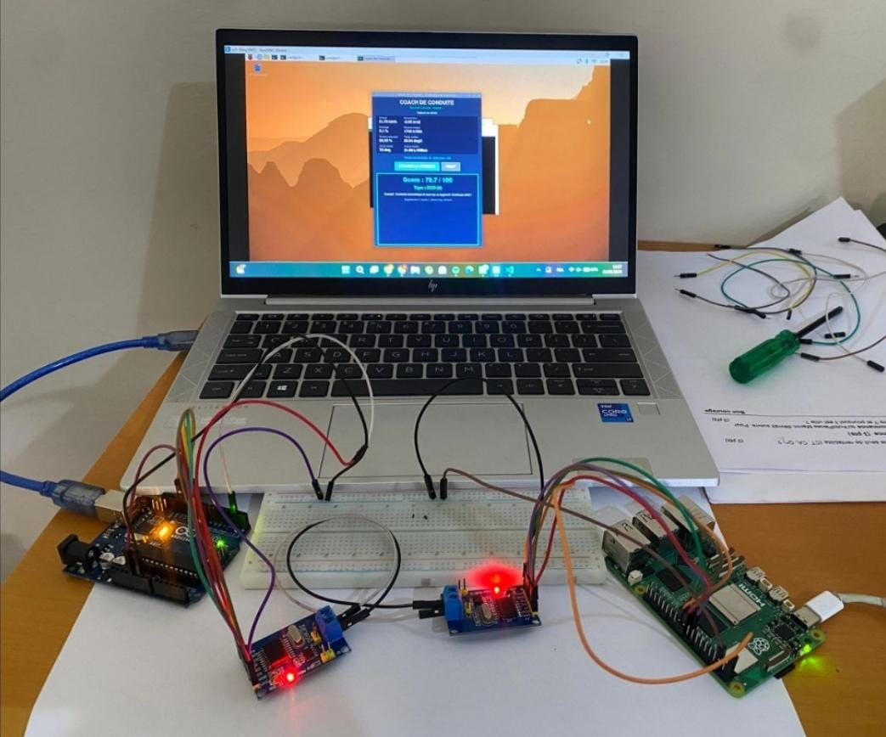
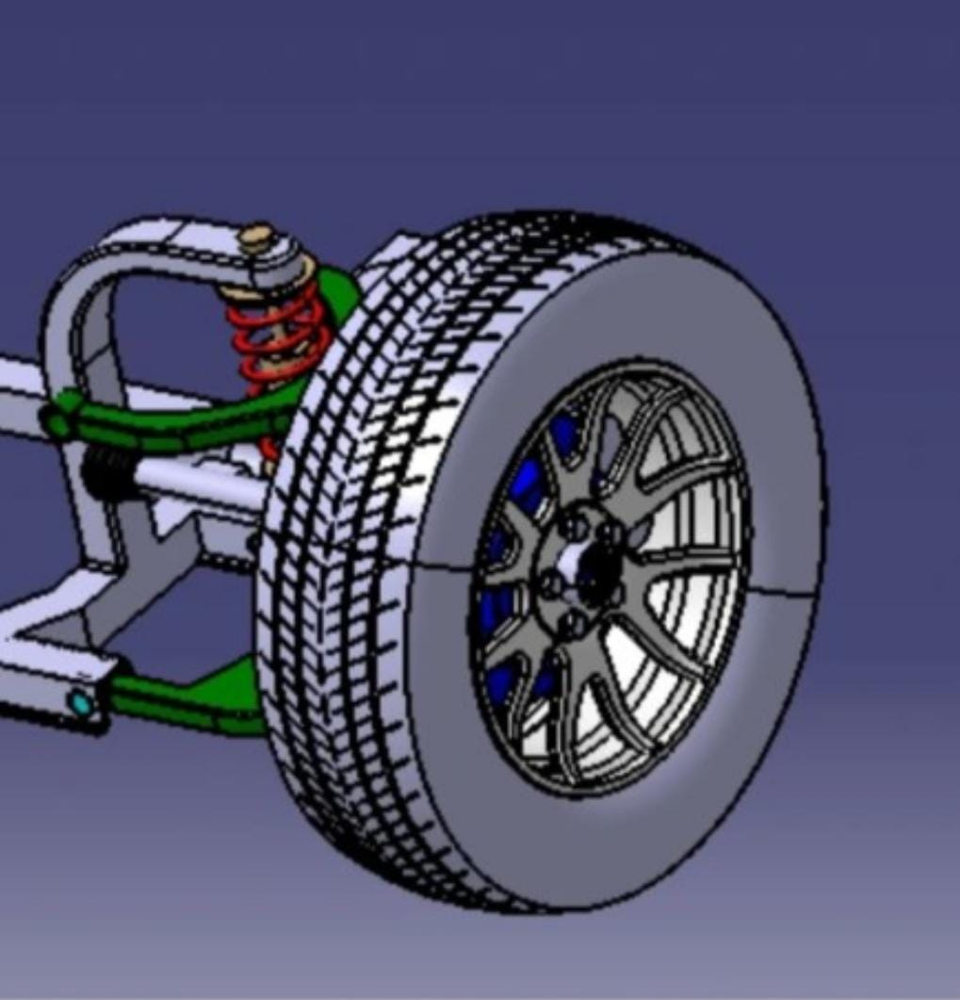

2024 — PRÉSENTDernière année

ENSABERRECHID
Cycle d’ingénieur
Automobile et Solutions Digitales
École nationale des sciences appliquées — Berrechid
PORTFOLIO · INGÉNIERIE AUTOMOBILE
Élève ingénieur en Automobile
& Solutions Digitales
À la recherche d’un stage PFE
De l’analyse fonctionnelle aux systèmes embarqués, je relie l’électronique, le logiciel et la mécanique.
01 — À PROPOS
Élève ingénieur en dernière année à l’ENSA Berrechid et alternant DRE chez SEGULA Technologies, spécialisé en mécatronique automobile et systèmes embarqués.
Mon parcours associe mécanique, électronique et informatique, avec des compétences en modélisation, programmation et ingénierie système.
À la recherche d’un stage PFE, je souhaite contribuer à la conception, à l’intégration et à la validation de systèmes fiables et performants.
02 — FORMATIONS
De la qualité industrielle
à l’ingénierie automobile.

Automobile et Solutions Digitales

Métrologie, Qualité, Sécurité et Environnement
Techniques instrumentales et management de la qualité
Sciences expérimentales
03 — COMPÉTENCES
Des outils et des méthodes
au service du fonctionnement.
Développement logiciel et scripts.
Microcontrôleurs, électronique et plateformes embarquées.
Bas niveau et temps réel — notions
Du besoin à la validation du système.
Construction d’images et mise à jour de systèmes embarqués.
Échanges de données, tests et suivi du fonctionnement.
Tests et validation
Modélisation, simulation et conception mécatronique.
Développement, gestion de versions et suivi de projet.
Méthodes d’organisation et d’amélioration continue.
Architectures, processus, sécurité et qualité.
04 — EXPÉRIENCE
Mécatronique, automobile
et environnement industriel.

AUTO HALLSAFIStage d’initiation — Auto Hall SafiJuillet 2025Stage d’initiationAUTO HALL · SAFIService après-vente automobileSuivi des pièces et des stocks
OCPSAFIStage PFE de licence professionnelle — OCP SafiAvril — Juin 2024PFE de licenceOCP · SAFIÉtude d’impact environnementalProjet PS4 · Analyse des risques05 — PROJETS ACADÉMIQUES
Aide à la conduite, commande
et conception mécatronique.

ACC, FCW et AEB validés en MIL. Intégration C/C++ prévue sur STM32 et Raspberry Pi, avec CAN et supervision Qt.

Modèle d’intelligence artificielle pour détecter la fatigue du conducteur en temps réel.

Commande sous MATLAB/Simulink pour récupérer l’énergie cinétique d’un véhicule électrique.

Analyse sur Raspberry Pi, échanges CAN avec Arduino/MCP2515, score et conseils de conduite.

Conception et modélisation CAO d’un système de suspension automobile sous CATIA V5.
06 — CERTIFICATIONS
Simulation et ingénierie automobile.
MATHWORKS · COURSERA
Mai 2026
STARWEAVER
07 — CONTACT
Vous proposez un stage PFE en systèmes embarqués, en mécatronique automobile ou en ingénierie système ? Je serais ravi d’en discuter.
M’écrire un email